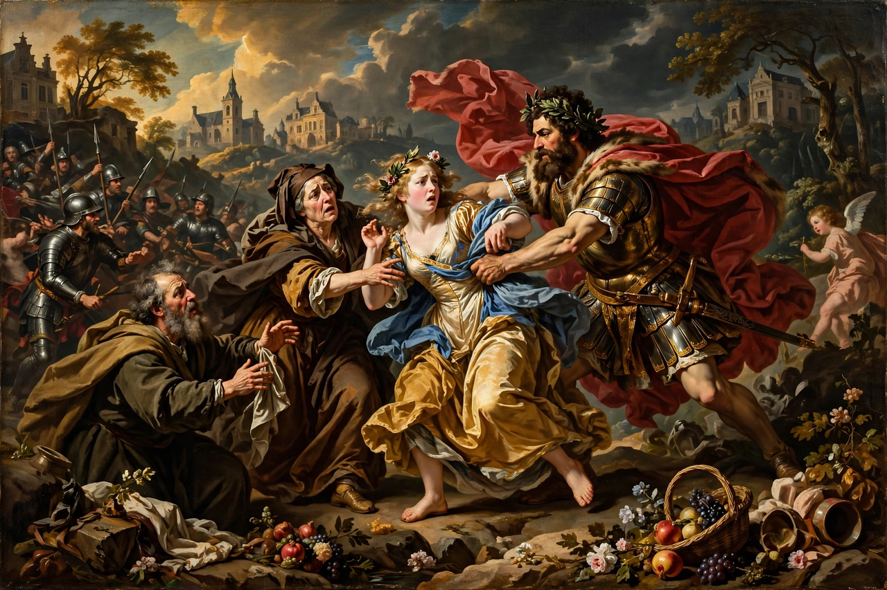

Flemish painting

Flemish painting flourished from the early 15th century to the 17th century in the region of Flanders in modern-day Belgium, producing some of the most celebrated art in European history. The term covers several distinct phases: the Early Netherlandish painting of the 15th and early 16th centuries, Flemish Renaissance painting, and the Flemish Baroque of the 17th century.
Early Netherlandish painting
The first great flowering came in the Burgundian Netherlands, where artists such as Jan van Eyck, Rogier van der Weyden, Robert Campin and Hans Memling perfected oil painting, achieving unprecedented realism, luminous colour and intricate detail in works like van Eyck's Ghent Altarpiece (1432) and Arnolfini Portrait (1434). Hieronymus Bosch, working at the end of this period, filled his panels with fantastical imagery.
Renaissance and Mannerism
In the 16th century Antwerp became the commercial and artistic capital of Northern Europe. Pieter Bruegel the Elder painted peasant scenes and landscapes of extraordinary scope, while artists such as Quentin Matsys and Jan Gossaert absorbed Italian Renaissance influences, a group sometimes called the Romanists.
Flemish Baroque
The supreme figure of Flemish Baroque painting is Peter Paul Rubens (1577–1640), whose dynamic, sensuous canvases for the courts of Europe made Antwerp famous once more. His pupil Anthony van Dyck became the leading court painter in England. Other major figures include Jacob Jordaens, Frans Snyders (animal painting), Adriaen Brouwer and David Teniers the Younger (genre scenes), and Clara Peeters (still life). Flemish workshops exported paintings on an enormous scale throughout Europe and the Americas.
Legacy
After about 1700 Flemish painting declined with the region's economy, but its achievements — the perfection of oil technique, the development of landscape, genre and still-life painting as independent subjects — permanently shaped Western art (see also Figurative art).